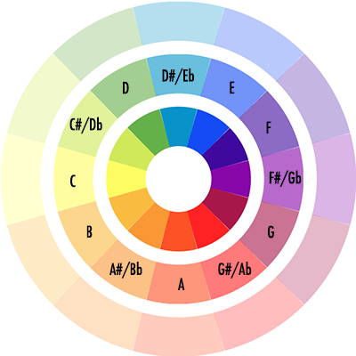
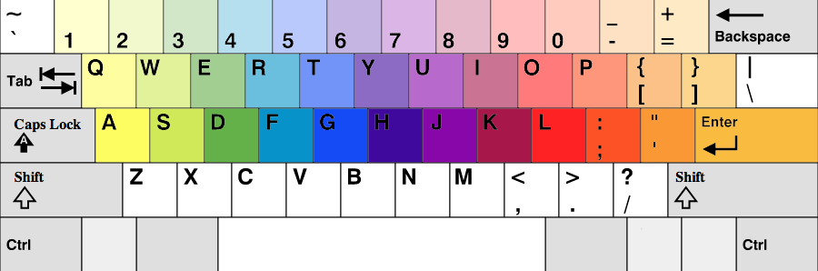
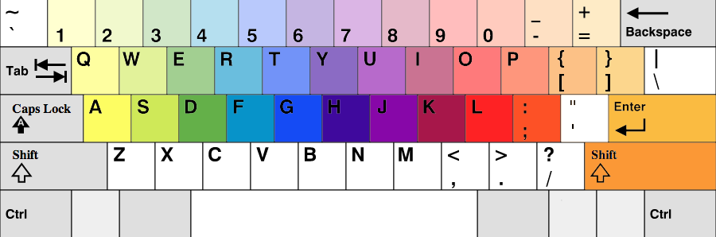

the innermost circle begins with C3 and
each outer circle is one octave higher
Keyboard controls depend on the browser:

keyboard controls for
Chrome and Internet Explorer

keyboard controls for Firefox
The Cyclochromatophone is written in JavaScript with help from the
Raphaël
library. Although the audio is set to preload, in order to avoid lag while playing, please cycle through each note one time through.